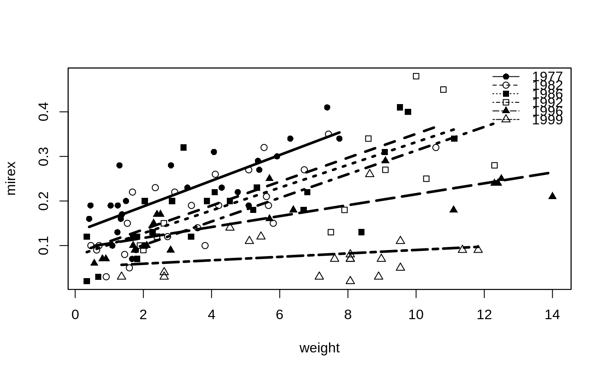

R/comparisonsDVR.R
compSlopes.RdTests for significant differences among all pairs of slopes in a dummy variable regression where the dummy variables all stem from one factor.
compSlopes( mdl, method = stats::p.adjust.methods, conf.level = 0.95, order.slopes = TRUE, digits = getOption("digits") ) # S3 method for compSlopes print(x, ...)
| mdl | A |
|---|---|
| method | A string indicating the method of p-value adjustment to use. See details and |
| conf.level | A single number that represents the level of confidence to use for constructing confidence intervals. |
| order.slopes | A logical indicating whether the slopes should be ordered from smallest to largest upon output. |
| digits | A numeric that controls the number of digits to print. |
| x | A |
| ... | Other arguments sent to |
A list with three components. The first component contains the p-value adjustment method in method. The second component, called comparisons, is a data.frame that contains the following:
comparison | Description of how the difference in levels was computed. |
diff | The estimated difference in slope values. |
lwr | Lower confidence bound for difference in slope values. |
upr | Upper confidence bound for difference in slope values. |
p.unadj | Unadjusted p-value for testing the difference in slopes is zero. |
p.adj | Adjusted p-value for testing the difference in slopes is zero. |
The third component, called slopes, is a data.frame that contains the following:
level | A level name. |
slope | The estimated slope value for the given level. |
XX LCI | Lower confidence bound for difference in slope values. |
XX UCI | Upper confidence bound for difference in slope values. |
p.unadj | Unadjusted p-value for testing the slope is zero. |
p.adj | Adjusted p-value for testing the slope is zero. |
The print function prints the results nicely.
In a dummy variable regression the coefficient for the interaction between the covariate (x) and a dummy variable tests for a difference in slopes between the level of the dummy variable and the reference level. Thus, all dummy variables from a particular linear model fit only compare slopes with the reference level. Other slope comparisons may be found by changing the reference level, which requires refitting the model. This function automates this sequential process and produces a data.frame that shows the estimated difference, an unadjusted confidence interval for the difference, and the unadjusted and adjusted (for multiple comparisons) p-values for testing that the difference in slopes is equal to zero for each pair of levels. The adjusted p-values may be computed with any of the methods coded in p.adjust (see p.adjust.methods there).
This function only works for linear models with one factor variable.
compIntercepts in FSA.
Derek H. Ogle, derek@derekogle.com
Mirex$year <- factor(Mirex$year) # fit a dummy variable regression, see that slopes differ lm1 <- lm(mirex~weight*year,data=Mirex) anova(lm1)#> Analysis of Variance Table #> #> Response: mirex #> Df Sum Sq Mean Sq F value Pr(>F) #> weight 1 0.22298 0.222980 60.2061 4.7e-12 *** #> year 5 0.50667 0.101333 27.3607 < 2.2e-16 *** #> weight:year 5 0.09351 0.018703 5.0499 0.0003326 *** #> Residuals 110 0.40740 0.003704 #> --- #> Signif. codes: 0 ‘***’ 0.001 ‘**’ 0.01 ‘*’ 0.05 ‘.’ 0.1 ‘ ’ 1# compare all pairs of slopes using default Holm control compSlopes(lm1)#>#> comparison diff 95% LCI 95% UCI p.unadj p.adj #> 1 1982-1977 -0.00202 -0.01678 0.01273 0.78627 1.00000 #> 2 1986-1977 -0.00331 -0.01670 0.01008 0.62556 1.00000 #> 3 1992-1977 -0.00233 -0.01676 0.01211 0.75010 1.00000 #> 4 1996-1977 -0.01661 -0.02903 -0.00418 0.00929 0.09394 #> 5 1999-1977 -0.02500 -0.03964 -0.01036 0.00099 0.01386 #> 6 1986-1982 -0.00128 -0.01393 0.01137 0.84111 1.00000 #> 7 1992-1982 -0.00030 -0.01405 0.01345 0.96535 1.00000 #> 8 1996-1982 -0.01458 -0.02621 -0.00295 0.01445 0.11790 #> 9 1999-1982 -0.02297 -0.03694 -0.00901 0.00149 0.01788 #> 10 1992-1986 0.00098 -0.01130 0.01326 0.87451 1.00000 #> 11 1996-1986 -0.01330 -0.02314 -0.00346 0.00854 0.09394 #> 12 1999-1986 -0.02169 -0.03421 -0.00917 0.00084 0.01260 #> 13 1996-1992 -0.01428 -0.02550 -0.00306 0.01310 0.11790 #> 14 1999-1992 -0.02267 -0.03630 -0.00904 0.00132 0.01716 #> 15 1999-1996 -0.00839 -0.01988 0.00309 0.15049 1.00000#> #>#> level slopes 95% LCI 95% UCI p.unadj p.adj #> 6 1999 0.00386 -0.00593 0.01366 0.4362 0.4362 #> 5 1996 0.01225 0.00625 0.01826 0.0001 0.0002 #> 3 1986 0.02555 0.01775 0.03335 0.0000 0.0000 #> 4 1992 0.02653 0.01705 0.03602 0.0000 0.0000 #> 2 1982 0.02684 0.01688 0.03680 0.0000 0.0000 #> 1 1977 0.02886 0.01798 0.03974 0.0000 0.0000# compare all pairs of slopes using the false discovery rate control compSlopes(lm1,method="fdr")#>#> comparison diff 95% LCI 95% UCI p.unadj p.adj #> 1 1982-1977 -0.00202 -0.01678 0.01273 0.78627 0.93698 #> 2 1986-1977 -0.00331 -0.01670 0.01008 0.62556 0.93698 #> 3 1992-1977 -0.00233 -0.01676 0.01211 0.75010 0.93698 #> 4 1996-1977 -0.01661 -0.02903 -0.00418 0.00929 0.02322 #> 5 1999-1977 -0.02500 -0.03964 -0.01036 0.00099 0.00559 #> 6 1986-1982 -0.00128 -0.01393 0.01137 0.84111 0.93698 #> 7 1992-1982 -0.00030 -0.01405 0.01345 0.96535 0.96535 #> 8 1996-1982 -0.01458 -0.02621 -0.00295 0.01445 0.02709 #> 9 1999-1982 -0.02297 -0.03694 -0.00901 0.00149 0.00559 #> 10 1992-1986 0.00098 -0.01130 0.01326 0.87451 0.93698 #> 11 1996-1986 -0.01330 -0.02314 -0.00346 0.00854 0.02322 #> 12 1999-1986 -0.02169 -0.03421 -0.00917 0.00084 0.00559 #> 13 1996-1992 -0.01428 -0.02550 -0.00306 0.01310 0.02709 #> 14 1999-1992 -0.02267 -0.03630 -0.00904 0.00132 0.00559 #> 15 1999-1996 -0.00839 -0.01988 0.00309 0.15049 0.25082#> #>#> level slopes 95% LCI 95% UCI p.unadj p.adj #> 6 1999 0.00386 -0.00593 0.01366 0.4362 0.43620 #> 5 1996 0.01225 0.00625 0.01826 0.0001 0.00012 #> 3 1986 0.02555 0.01775 0.03335 0.0000 0.00000 #> 4 1992 0.02653 0.01705 0.03602 0.0000 0.00000 #> 2 1982 0.02684 0.01688 0.03680 0.0000 0.00000 #> 1 1977 0.02886 0.01798 0.03974 0.0000 0.00000